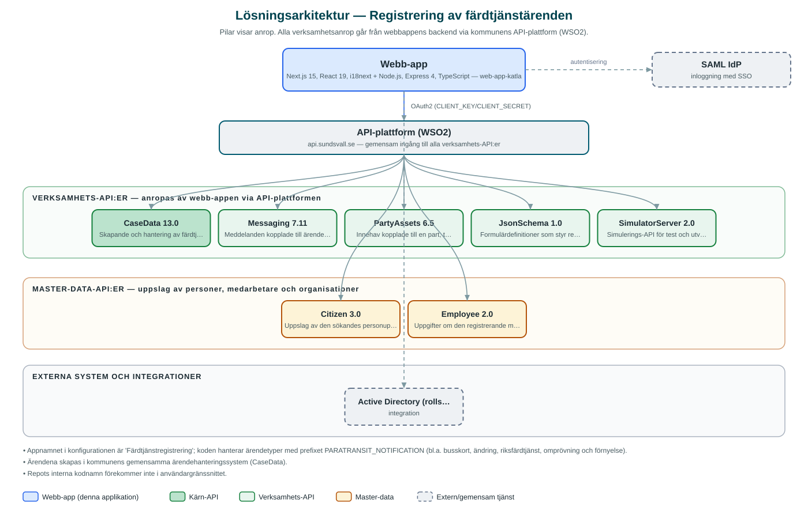

Registrering av färdtjänstärenden
Internt verktyg där kommunens medarbetare registrerar anmälningar och ansökningar om färdtjänst direkt i kommunens ärendehanteringssystem.
Om applikationen
Tjänsten används av kommunens personal för att registrera färdtjänstärenden, till exempel nya anmälningar, förnyelser, ändringar, omprövningar, busskort och riksfärdtjänst. Uppgifter om den sökande hämtas automatiskt via personnummer och ärendet skapas direkt i kommunens gemensamma ärendehanteringssystem.
Registreraren kan bifoga relevanta bilagor till ansökan och får en översikt över registrerade ärenden med uppgift om när de skapades. Formulärens innehåll styrs av centrala formulärdefinitioner.
Inloggning sker med kommunens gemensamma inloggning och behörigheten styrs via AD-roller.
Det här stödjer applikationen
- Registrera färdtjänstärenden – Stöd för flera ärendetyper: ny anmälan, förnyelse, ändring, omprövning, busskort, riksfärdtjänst med flera.
- Automatiska personuppslag – Den sökandes uppgifter hämtas via personnummer ur befolkningsdata.
- Bilagor – Relevanta handlingar kan laddas upp och kopplas till ansökan.
- Ärendeöversikt – Lista över registrerade ärenden med registreringsdatum och status.
- Formulär från mallar – Formulären styrs av centrala formulärdefinitioner som kan uppdateras utan omprogrammering.
Teknisk dokumentation
Nedan beskrivs hur applikationen är uppbyggd, vilka API:er den använder och vad som krävs för att driftsätta den. Informationen är härledd ur källkoden och dess konfiguration på GitHub.
Arkitektur

Applikationen består av en webbaserad frontend (Next.js 15, React 19, i18next) och en backend (Node.js, Express 4, TypeScript) som utvecklas i samma kodbas. Verksamhetsanrop går via kommunens gemensamma API-plattform (WSO2) – frontend pratar aldrig direkt med underliggande system. Inloggning: SAML (SSO) med behörighetsstyrning via AD-roller. Övriga integrationer som förekommer i koden: SAML IdP, Active Directory (rollstyrning).
Teknikstack
- Frontend: Next.js 15, React 19, i18next
- Backend: Node.js, Express 4, TypeScript
- Test: Jest
API-beroenden
Applikationen konsumerar följande API:er via kommunens API-plattform. Versionerna är hämtade ur källkodens API-konfiguration.
| API | Version | Användning |
|---|---|---|
| CaseData | 13.0 | Skapande och hantering av färdtjänstärenden. |
| Messaging | 7.11 | Meddelanden kopplade till ärenden. |
| PartyAssets | 6.5 | Innehav kopplade till en part, t.ex. tillstånd och kort. |
| JsonSchema | 1.0 | Formulärdefinitioner som styr registreringsformulären. |
| SimulatorServer | 2.0 | Simulerings-API för test och utveckling. |
| Citizen | 3.0 | Uppslag av den sökandes personuppgifter via personnummer. |
| Employee | 2.0 | Uppgifter om den registrerande medarbetaren. |
Konfiguration och driftsättning
- Miljöfiler: frontend/.env-example (appnamn 'Färdtjänstregistrering') och backend/.env.example.local
- CLIENT_KEY och CLIENT_SECRET mot kommunens API-plattform (WSO2)
- SAML-inställningar med IdP-adress och certifikat
Noterbart ur källkoden
- Appnamnet i konfigurationen är 'Färdtjänstregistrering'; koden hanterar ärendetyper med prefixet PARATRANSIT_NOTIFICATION (bl.a. busskort, ändring, riksfärdtjänst, omprövning och förnyelse).
- Ärendena skapas i kommunens gemensamma ärendehanteringssystem (CaseData).
- Repots interna kodnamn förekommer inte i användargränssnittet.
Källkod
Källkoden är öppen och finns hos Sundsvalls kommun på GitHub. I källkodsförrådet finns även instruktioner för att klona, konfigurera och starta applikationen i egen miljö.